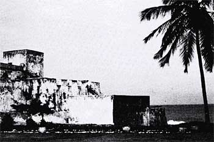

Who was a slave? In West Africa, you could be enslaved to pay a family debt or obligation owed to those more powerful. You may have been born into slavery and have known nothing but that life. By far, though, people were most often enslaved when they were defeated in battle by a stronger group.
West Africans, Europeans, and Arabs were all involved in the slave trade. As Europeans built coastal fortification as footholds on the African continent, power began to shift to the coasts from the traditional groups and trade routes that ran up and down the interior. Slave markets developed around these ports as humans became the cargo of choice.
So many West Africans died during transport from African coastal ports to the Caribbean—which was called the 'middle passage'—that nearly one in seven did not survive the voyage. The mortality rate was nearly 25% in the earlier decades of the slave trade mostly due to cholera and dysentery. However, British slave ships' crews died during the same passages at a rate of 17%, so life was not so good above decks.West African slaves were brought to Cuba or Jamaica for 'seasoning' (yes, the expression was the same that was used for meat) during which time they were acclimatized and suffered further island diseases such as dysentery, smallpox, and lockjaw. Most West African slaves remained in the Caribbean or shipped to Central America to work the huge sugar plantations (Ferguson 2002).
 Fewer West African slaves
were shipped north to New Orleans for further sale to American
agricultural landholders. The plantations of the American South were far
smaller than the vast agricultural enterprises of the Caribbean or
Central America where many slaves were left to themselves after the
day's work ended. As a consequence, many were able to preserve cultural
practices that they brought with them from West Africa.
Fewer West African slaves
were shipped north to New Orleans for further sale to American
agricultural landholders. The plantations of the American South were far
smaller than the vast agricultural enterprises of the Caribbean or
Central America where many slaves were left to themselves after the
day's work ended. As a consequence, many were able to preserve cultural
practices that they brought with them from West Africa.